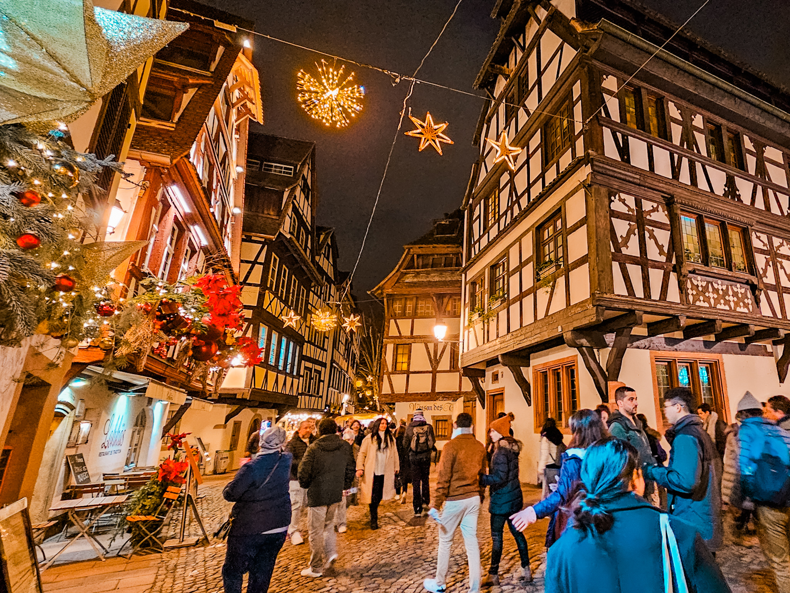

#4 — Strasbourg
📍 Alsace, France | The Capital of Christmas

DESCRIPTION
Strasbourg is famous for its long Christmas-market tradition. Festive stalls fill historic squares, while lights brighten the streets around the cathedral and the charming Petite France district. The giant Christmas tree and local treats are popular holiday highlights.
Things to Do: See the cathedral, the giant Christmas tree, and the historic markets.
Best Time to Visit: Late November through December; market dates vary each year.
TRAVEL INFORMATION
How to Get There: Arrive by train at Strasbourg station; many central attractions are reachable on foot or by tram.
Travel Highlights: See the famous Christmas tree, browse seasonal market stalls, and explore Petite France.
Travel Tips: Expect busy weekends and check event dates before traveling.
Important Note: Market schedules, transportation services, and opening hours may change each year. Check current details before your trip.